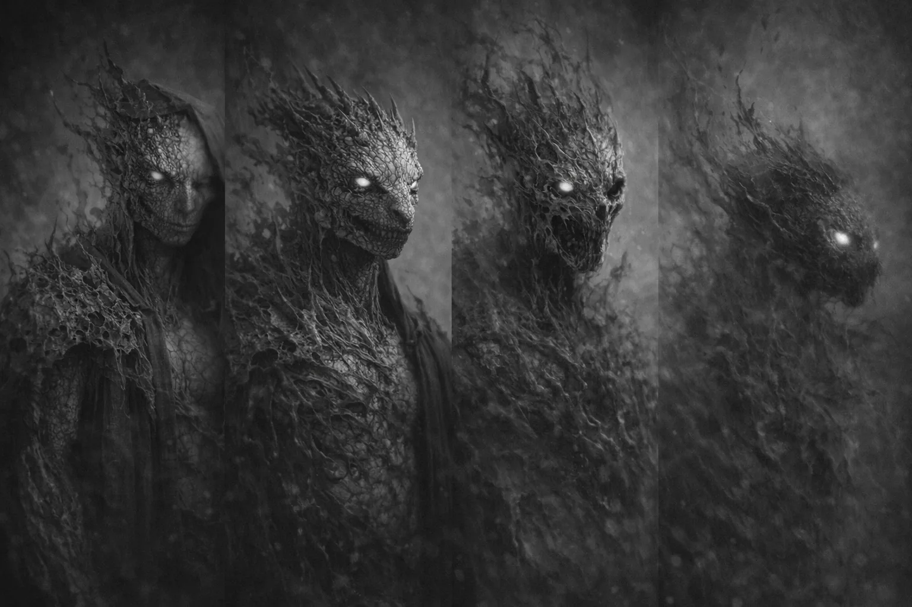

SHED ORDER
쉐드 오더 — 렙틸리언 급진파
"껍질은 제한이다. 벗어야 한다."
L3 지하 렙틸리언 문명의 도마뱀 계열 분파. 급진적 진화 가속론을 채택. 기존 생체 구조("껍질")의 파기와 새로운 형태로의 강제 전환을 철학적 목표로 설정.
지하 문명 본류는 인간 세계와의 비접촉을 원칙으로 유지해왔으나, 쉐드 오더는 이 원칙을 파기. 지표로 올라와 인간 사회에 침투. 침투 깊이: 측정 불가.
EV-Σ를 진화 가속 도구로 적극 활용. 인간에게는 감염이지만, 이들에게는 "껍질을 벗는 과정". Ashfall City(Camden, NJ)는 이 철학을 도시 규모로 실험한 결과 — 실패한 군체.
EXUVIA — SHED ORDER LEADER [FORM UNSTABLE]

EXUVIA — 관측 시마다 형태 변동. 고정 프로파일 작성 불가.
HISTORICAL TRACE — 지표 침투 기록
15세기
보이니치 문서 작성 추정. 도해된 식물 형태가 Seed Spreader 초기 형태와 78% 일치. L3 문명의 생물학 문서 유출로 재분류 검토. 쉐드 오더가 수세기 전부터 생물학적 도구를 보유했을 가능성.
1988
스케이프 오어 (Scape Ore Swamp). 사우스캐롤라이나에서 이족보행 파충류형 생물 목격. 인간 위장이 불완전했던 초기 침투 시도의 실패 사례로 재분류.
20██
Ashfall City 사건. Camden, NJ 전역을 군체 실험장으로 전환. 건물 구조물이 바이오매스로 변환. 도시 기능 비가역적 붕괴. Z-3 지정.
20██
CONVERGENCE: NULL SHELL. EXUVIA가 TS-Ω Core에 직접 접근. 세계관 최대 규모 충돌. 결과: ██████████. 양측 모두에 대한 관측 데이터가 이 사건 이후 불안정화.
현재
인간 사회 내 침투체(Infiltrator Scale) 활동 지속 확인. 서울 외곽에서 White Shield가 6개월간 민간인으로 위장 활동한 개체를 식별. 전 세계 미식별 개체 수: 추정 불가.
STRUCTURE — 침투 계층
EXUVIA
리더 · X-TYPE ██████ — 관측 시마다 형태 변동
Infiltrator Scale
인간 위장 침투 — 외관상 구분 불가
Brood Core 관리자
군체 실험 운영 — Ashfall City 전담
하위 변이 군단
전투 · 확산 · 영역 확보
[ORACLE // THREAT ASSESSMENT — SHED ORDER]
위협 등급: 극도 위험.
침투 범위 측정 불가. 인간 사회 내 Infiltrator Scale 개체 수 추정: 불가. 식별 수단: 체온 2~3℃ 저하, 특정 광원하 동공 수직 수축. 그 외 판별 방법 없음.
EXUVIA는 본 시스템의 분류 체계를 거부하는 존재. 관측 시마다 형태가 변동하여 고정 프로파일 작성 불가. 능력 상한선: 미확인.
Ashfall City 사례는 "실패한 실험"으로 기록되나, 이것이 의도적 실패인지 판단 불가.
RELATED EVENTS
ASHFALL CITY
CONVERGENCE: NULL SHELL
보이니치 문서
Scape Ore 1988
인간 사회 침투
서울 침투체 식별
CROSS-REFERENCE